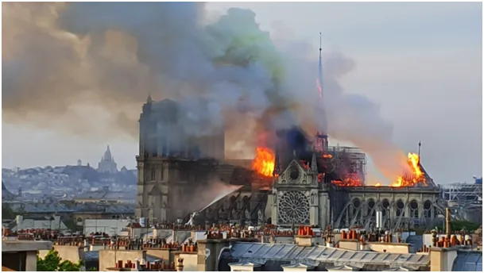
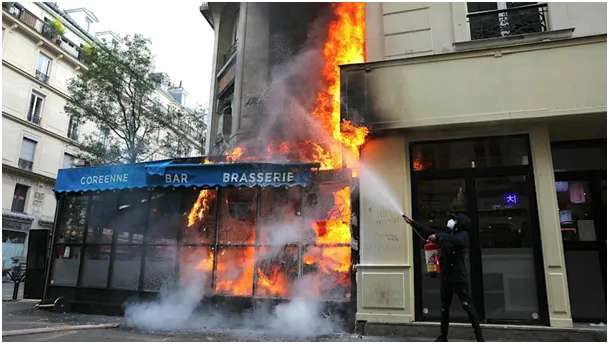

Rewolucja nie bierze jeńców i krzyczy: „Wolność, równość, braterstwo albo śmierć!” Charlie Kirk nie chciał być komunistą, więc dostał kulkę.
Słodka Francjo, umierasz w goryczy swej głupoty.
2023-09-11
To będzie piękna katastrofa! Los Francji w rękach byłego ministra ds. EKOLOGICZNEJ i INKLUZYWNEJ.
W prasie francuskiej czytamy: "Lecornu obejmuje urząd po tym, jak premier Francois Bayrou przegrał w poniedziałek głosowanie nad wotum zaufania w Zgromadzeniu Narodowym. Jest jedynym ministrem, który nieprzerwanie pełni funkcję w rządzie od czasu dojścia Macrona do władzy w 2017 r. W wieku 39 lat piastował m.in. stanowiska sekretarza stanu przy ministrze ds. transformacji EKOLOGICZNEJ i INKLUZYWNEJ, ministra delegowanego ds. władz lokalnych oraz ministra ds. terytoriów zamorskich, zanim objął stanowisko ministra sił zbrojnych."

Na drugim zdjęciu sztandar Komunistycznej Partii Kurdystanu rozwijany regularnie podczas burd na ulicach Paryża. Kurdyjska partia leninowska została założona na początku XX wieku
przez Związek Radziecki na terenie Turcji w celu rozbijania spójności tego kraju. Z założenia była to partia terrorystyczna, ma na koncie 40 000 ofiar w zamachach i napadach głównie wśród cywilów. Większość Kurdów w Turcji nie sympatyzuje z tym szwadronem śmierci.
W "naszych" mediach całkiem przemilczano bardzo ważny moment historyczny, że ta formacja w lipcu 2025 w Turcji złożyła broń i oficjalnie zrezygnowała z działalności. Jest to życiowy, polityczny i militarny sukces Erdoğana, dlatego taka cisza wokół tej sprawy w Europie. Sprawa jest prosta, po zamachach na dworce autobusowe itp. Turcja przyjęła zasadę, że z bandytami się nie negocjuje. Tych terrorystów ścigano w najdalszych górach Iraku czy Syrii nie szczędząc środków. Co dzień w tureckiej TV można było zobaczyć jak tureckie F16 celnie wypalają górskie jaskinie z magazynami broni daleko poza granicami Turcji. Przy okazji Irak pozbył się też jednej z destrukcyjnych sił.

Ale wróćmy do Paryża, Francja mimo swej lewackiej doktryny ma w narodzie opozycję w postaci skrajnego komunizmu i leninizmu. Wysoki socjal i kolonialna przeszłość zassały wszelkiej maści lewicowych radykałów z całego świata, w tym głównie ze świata islamu. Tu powinien pojawić się długi esej o zbieżnościach islamu, socjalizmu i reformacji, ale nie ma na to miejsca. W skrócie: wszystkie te idee są sprzeczne z chrześcijańskim indywidualizmem, zarówno po stronie człowieka, jak i Boga. Dla wszelkiej maści totalniaków godność człowieka w relacji osobowej ze Stwórcą jest nie do zniesienia, stąd tak zaciekła walka z chrześcijaństwem w postaci katolicyzmu. Człowiek tak wysoko osadzony w hierarchii stworzenia nie może być podmiotem systemu jak inne zwierzęta, to jest główna oś sporu cywilizacji łacińskiej i barbarzyńskich wynalazków jak socjalizm itp.
Paryż płonie, ale nie w obronie ludzkiej wolności! Paryż płonie w tęsknocie za kołchozami i kibucami, wspólnymi żonami robotników i zakładowymi stołówkami, gdzie wszyscy jedzą to samo. Ci ludzie na ulicach Francji z czerwonymi sztandarami i pochodniami są przekonani, że Lenin osiągnął sukces i uszczęśliwił miliony Rosjan. Trudno, Ci ludzie są dorośli. Francja odcięła się od cywilizacji łacińskiej w 1789 roku mordując katolików w sposób przemysłowy jak hitlerowcy w okupowanej Polsce. Więcej o tym tu: https://pawelklimczewski.pl/2024/11/10/11-listopada-skad-tu-haslo-wolnosc-rownosc-braterstwo-albo-smierc/ Nie dajmy się zwieść, jeśli dziś rząd Francji krytykuje zbrodnie Tel Awiwu to tylko dlatego, że jego elektorat to w dużej mierze Arabowie, w tym Palestyńczycy.
Paweł Klimczewski